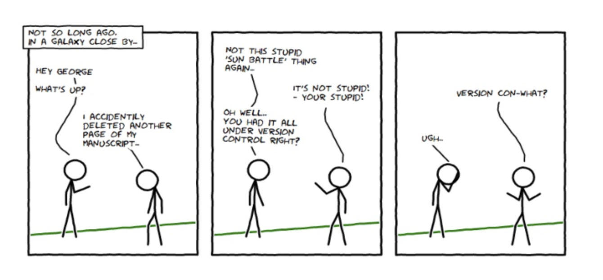

Git and GitHub
Biostat 203B
1 If it’s not in source control, it doesn’t exist.

2 Collaborative research
Data scientists and statisticians, as opposed to closet mathematicians, rarely do things in vacuum.
We talk to scientists/clients about their data and questions.
We write code (a lot!) together with team members or coauthors.
We run code/program on different platforms.
We write manuscripts/reports with co-authors.
We distribute software so potential users have access to your methods.
In every project you have at least one other collaborator, future-you. You don’t want future-you to curse past-you.
Hadley Wickham
3 Why version control?
A centralized repository helps coordinate multi-person projects.
Time machine. Keep track of all the changes and revert back easily (reproducible).
Storage efficiency.
Synchronize files across multiple computers and platforms.
GitHub is becoming a de facto central repository for open source development. E.g., all packages in Julia are distributed through GitHub; Hadley Wickham also recommends Git/GitHub as the best practices for R package development.
Advertise yourself through GitHub.
AmStat article: What Is Data Science Specialization, and What Can It Do for You?
What should an employer look for when they see a certification on a résumé?
For our program, and likely data science in general, they should look at the applicant’s GitHub page. They should see interesting project and code contributions.
4 Available version control tools
Open source: Git, Apache subversion (aka svn), cvs, mercurial.
Proprietary: Visual SourceSafe (VSS), etc.
Dropbox? Mostly for file backup and sharing, limited version control (1 month?).
We use Git in this course.
5 Git
Currently the most popular version control system according to Google Trend.
Initially designed and developed by Linus Torvalds in 2005 for Linux kernel development. Git is the British English slang for unpleasant person.
I’m an egotistical bastard, and I name all my projects after myself. First ‘Linux’, now ‘git’.
Linus Torvalds
6 Centralized vs distributed version control
Svn is a centralized version control system:

Git is a distributed version control system:

7 What do I need to use Git?
A Git server enabling multi-person collaboration through a centralized repository.
github.com: unlimited public repositories, private repositories costs $, but unlimited private repositories for free from Student Developer Pack.
bitbucket.org: unlimited public repositories, unlimited private repositories for academic account (register for free using your edu email).
We use github.com in this course for developing and submitting homework.
A Git client on your own machine.
Linux: Git client program is shipped with many Linux distributions, e.g., Ubuntu and CentOS. If not, install using a package manager, e.g.,
yum install giton CentOS.Mac: follow instructions at https://www.atlassian.com/git/tutorials/install-git.
Windows: Git for Windows (GUI) aka
Git BashorWindows WSL.
RStudio supports Git.
Do not totally rely on GUI or IDE. Learn to use Git on command line, which is needed for cluster and cloud computing. RStudio has basic Git integration, but still cannot do tasks such as tagging, commiting selected files within a folder, and so on.
8 Git workflow

9 Git survival commands
- Synchronize local Git directory with remote repository:
```{bash}
#| eval: false
git pull
```same as git fetch plus git merge.
Modify files in local working directory.
Add snapshots to staging area:
```{bash}
#| eval: false
git add FILES
```- Commit: store snapshots permanently to (local) Git repository
```{bash}
#| eval: false
git commit -m "MESSAGE"
```- Push commits to remote repository:
```{bash}
#| eval: false
git push
```10 Git basic usage
Register for an account on a Git server, e.g., github.com.
Upload your SSH public key to the server.
Identify yourself at local machine, e.g.,
```{bash}
#| eval: false
git config --global user.name "Your Name"
git config --global user.email "your_email@ucla.edu"
```Name and email appear in each commit you make.
Initialize a project.
Create a repository, e.g.,
biostat-203b-2023-winteron GitHub.Clone the repository to your local machine:
```{bash} #| eval: false git clone git@github.com:[USERNAME]/biostat-203b-2023-winter.git ```Working with your local copy.
git pull: update local Git repository with remote repository (fetch + merge).git log FILENAME: display the current status of working directory.git diff: show differences (by default difference from the most recent commit).git add file1 file2 ...: add file(s) to the staging area.git commit: commit changes in staging area to Git directory.git push: publish commits in local Git repository to remote repository.git reset --soft HEAD~1: undo the last commit.git checkout FILENAME: go back to the last commit, discarding all changes made.git rm FILENAME: remove files from git control.
11 Branching in Git

For this course, you need to have two branches:
developfor your own development.masterfor releases, i.e., homework submission.Note
masteris the default branch when you initialize the project; create and switch todevelopbranch immediately after project initialization.

Commonly used commands:
git branch branchname: create a branch.git branch: show all project branches.git checkout branchname: switch to a branch.git tag: show tags (major landmarks).git tag tagname: create a tag.
12 Sample session | Getting started with homework | Lab 2
On GitHub.com:
Obtain Student Developer Pack.
Create a private repository
biostat-203b-2023-winter. AddHua-Zhouandtomokiokuno0528as your collaborators with write permission.
On your local machine:
- Clone the repository, create
developbranch, where your work on solutions.
```{bash}
#| eval: false
# clone the project
git clone git@github.com:[USERNAME]/biostat-203b-2023-winter.git
# enter project folder
cd biostat-203b-2023-winter
# what branches are there?
git branch
# create develop branch
git branch develop
# switch to the develop branch
git checkout develop
# create folder for HW1
mkdir hw1
cd hw1
# let's write solutions
echo "sample solution" > hw1.Rmd
echo "some bug" >> hw1.Rmd
# commit the code
git add hw1.Rmd
git commit -m "start working on problem #1"
# push to remote repo
git push
```- Submit and tag HW1 solution to master branch.
```{bash}
#| eval: false
# which branch are we in?
git branch
# change to the master branch
git checkout master
# merge develop branch to master branch
# git pull origin develop
git merge develop
# push to the remote master branch
git push
# tag version hw1
git tag hw1
git push --tags
```- RStudio has good Git integration. But practice command line operations also.
13 Etiquettes of using Git
Be judicious what to put in repository.
Not too less: Make sure collaborators or yourself can reproduce everything on other machines.
Not too much: No need to put all intermediate files in repository. Make good use of the
.gitignorefile.Strictly version control system is for source files only. E.g. only
xxx.Rmd,xxx.bib, and figure files are necessary to produce a pdf file. Pdf file doesn’t need to be version controlled or, if version controlled, doesn’t need to be frequently committed.
Commit early, commit often and don’t spare the horses.
Adding an informative message when you commit is not optional. Spending one minute on commit message saves hours later for your collaborators and yourself. Read the following sentence to yourself 3 times:
Write every commit message like the next person who reads it is an axe-wielding maniac who knows where you live.